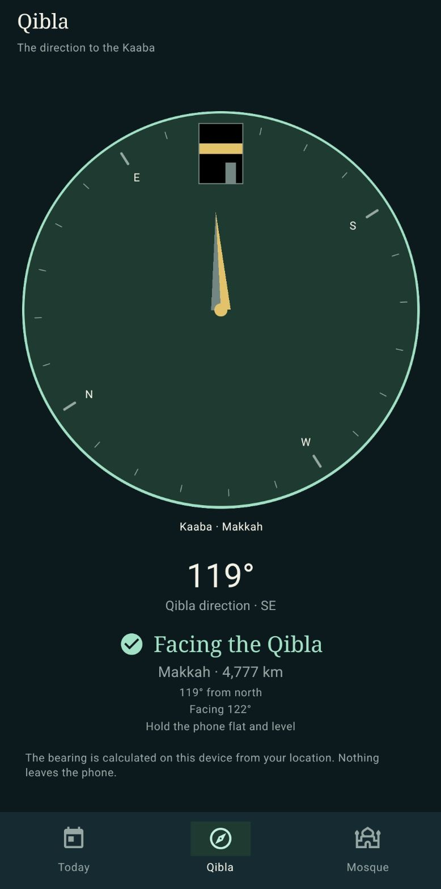

Android app · a product by ejaad
Adhan:
Prayer Times
Prayer times calculated on your phone from your coordinates, with the adhan at prayer time, a fourteen-day outlook, the Qibla, and nearby mosques.
- Android
- Works without a connection
- No account
Overview
Everything you use daily,
on the phone.
The app keeps the everyday parts simple: the times, the adhan, the Qibla and the mosques nearest to you.
-
01
Prayer times
The five daily prayer times, the next adhan, and a fourteen-day outlook.
-
02
The adhan
Play the adhan at prayer time on your phone, or cast it to a Google Cast speaker on your own Wi-Fi. Choose a recording, add a separate Fajr file, and play a short dua afterwards.
-
03
Settings that fit
Choose the calculation method, the Asr madhab and a high-latitude rule. Set a per-prayer offset, mute, or output.
-
04
Qibla
Point the phone at the Qibla. The screen shows the bearing in degrees and the distance to the Kaaba.
-
05
Nearby mosques
The nearest mosques from a bundled OpenStreetMap dataset for Great Britain and Pakistan, with distance and, where the data has one, an address to open in your maps app.
-
06
Test and status
Run a test adhan, and check a status screen that reports whether the last one played.
Screens
Today, Qibla, and the mosques near you.
The main screens, at a glance.


Privacy
What stays on your phone.
No account, no sign-in, no ads, no analytics, no crash reporting. Your location and settings stay on your phone.
Prayer times and the Qibla bearing are calculated on this device from your saved coordinates. Nothing leaves the phone.
Prayer times, adhan playback, the Qibla and the mosque list work without an internet connection. The app asks for internet access only so it can cast the adhan to a Google Cast speaker on your own Wi-Fi, when you choose to; casting stays on your local network and nothing is sent to us.
Prayer times vary by convention, so confirm the method used where you live.
Credits
Credits and licences.
The app carries mosque data and recorded audio. These are the sources and the terms they travel under.
Mosque data
© OpenStreetMap contributors, licensed under the Open Database License (ODbL) 1.0. The bundled dataset is as of November 2026 and covers Great Britain and Pakistan.
Audio
-
Adhan — Great Mosque of Mecca default
-
Jemaa El-Fna field recording marrakech-jemaa
-
Yet Another Adhan alafasy-yet-another
-
al-zahrani al-zahrani
-
aladhan-a9 aladhan-a9
-
Dua after the adhan dua
This is not a person reciting. The voice’s training dataset declares no licence.